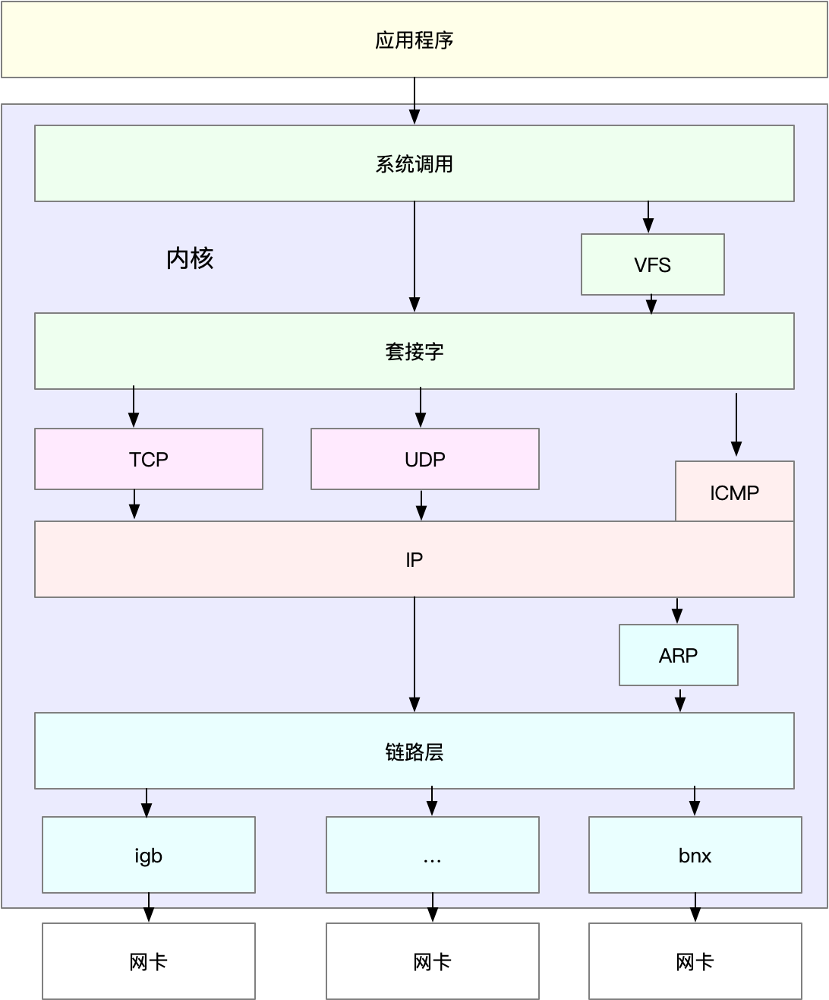
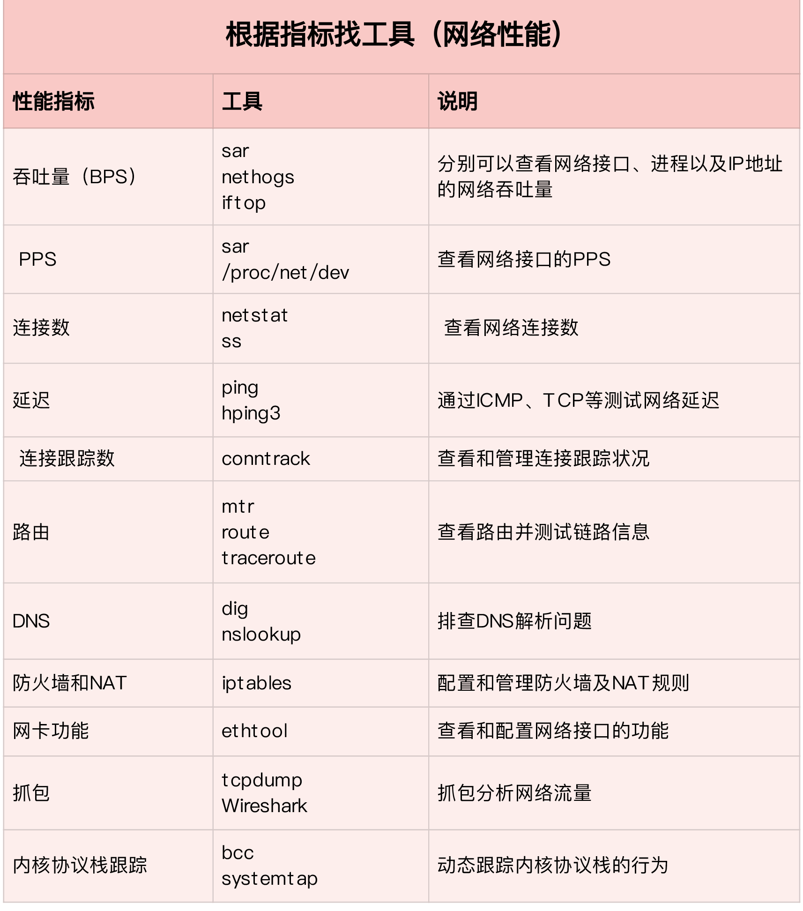
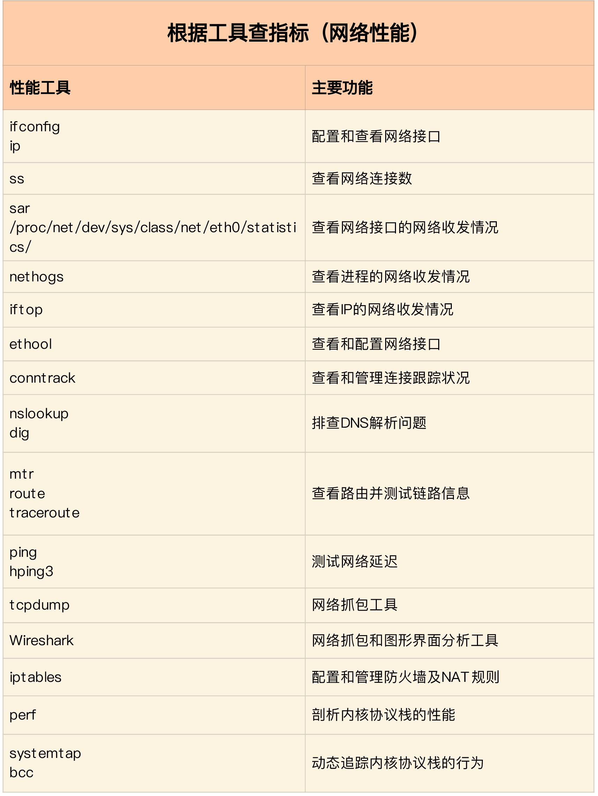
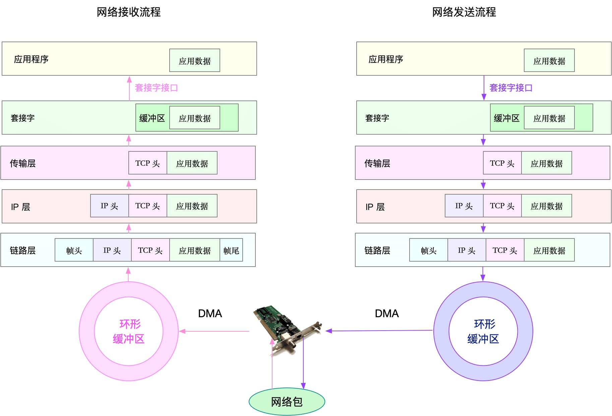
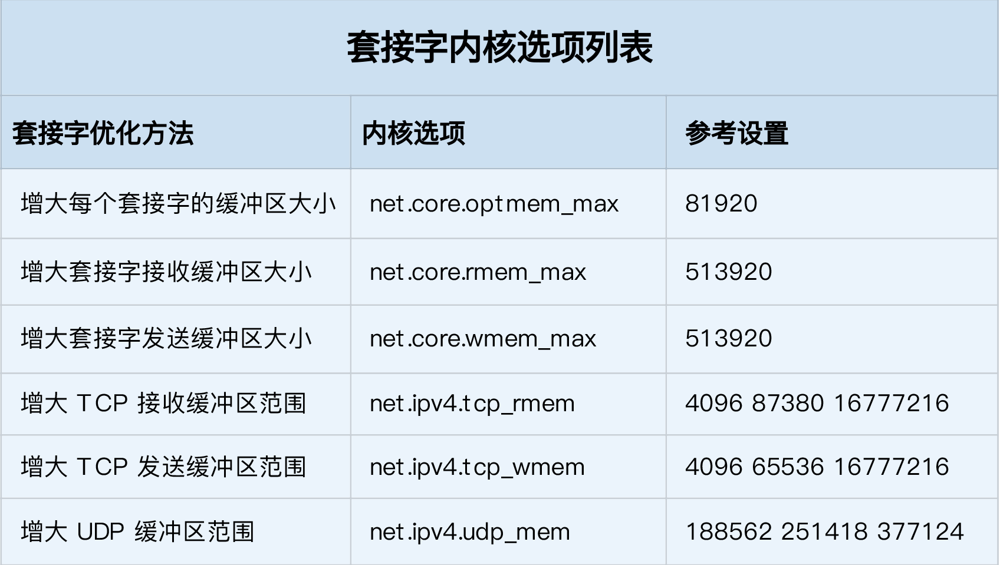

- 00 开篇词 别再让Linux性能问题成为你的绊脚石.md
- 01 如何学习Linux性能优化？.md
- 02 基础篇：到底应该怎么理解“平均负载”？.md
- 03 基础篇：经常说的 CPU 上下文切换是什么意思？（上）.md
- 04 基础篇：经常说的 CPU 上下文切换是什么意思？（下）.md
- 05 基础篇：某个应用的CPU使用率居然达到100%，我该怎么办？.md
- 06 案例篇：系统的 CPU 使用率很高，但为啥却找不到高 CPU 的应用？.md
- 07 案例篇：系统中出现大量不可中断进程和僵尸进程怎么办？（上）.md
- 08 案例篇：系统中出现大量不可中断进程和僵尸进程怎么办？（下）.md
- 09 基础篇：怎么理解Linux软中断？.md
- 10 案例篇：系统的软中断CPU使用率升高，我该怎么办？.md
- 11 套路篇：如何迅速分析出系统CPU的瓶颈在哪里？.md
- 12 套路篇：CPU 性能优化的几个思路.md
- 13 答疑（一）：无法模拟出 RES 中断的问题，怎么办？.md
- 14 答疑（二）：如何用perf工具分析Java程序？.md
- 15 基础篇：Linux内存是怎么工作的？.md
- 16 基础篇：怎么理解内存中的Buffer和Cache？.md
- 17 案例篇：如何利用系统缓存优化程序的运行效率？.md
- 18 案例篇：内存泄漏了，我该如何定位和处理？.md
- 19 案例篇：为什么系统的Swap变高了（上）.md
- 20 案例篇：为什么系统的Swap变高了？（下）.md
- 21 套路篇：如何“快准狠”找到系统内存的问题？.md
- 22 答疑（三）：文件系统与磁盘的区别是什么？.md
- 23 基础篇：Linux 文件系统是怎么工作的？.md
- 24 基础篇：Linux 磁盘I_O是怎么工作的（上）.md
- 25 基础篇：Linux 磁盘I_O是怎么工作的（下）.md
- 26 案例篇：如何找出狂打日志的“内鬼”？.md
- 27 案例篇：为什么我的磁盘I_O延迟很高？.md
- 28 案例篇：一个SQL查询要15秒，这是怎么回事？.md
- 29 案例篇：Redis响应严重延迟，如何解决？.md
- 30 套路篇：如何迅速分析出系统I_O的瓶颈在哪里？.md
- 31 套路篇：磁盘 I_O 性能优化的几个思路.md
- 32 答疑（四）：阻塞、非阻塞 I_O 与同步、异步 I_O 的区别和联系.md
- 33 关于 Linux 网络，你必须知道这些（上）.md
- 34 关于 Linux 网络，你必须知道这些（下）.md
- 35 基础篇：C10K 和 C1000K 回顾.md
- 36 套路篇：怎么评估系统的网络性能？.md
- 37 案例篇：DNS 解析时快时慢，我该怎么办？.md
- 38 案例篇：怎么使用 tcpdump 和 Wireshark 分析网络流量？.md
- 39 案例篇：怎么缓解 DDoS 攻击带来的性能下降问题？.md
- 40 案例篇：网络请求延迟变大了，我该怎么办？.md
- 41 案例篇：如何优化 NAT 性能？（上）.md
- 42 案例篇：如何优化 NAT 性能？（下）.md
- 43 套路篇：网络性能优化的几个思路（上）.md
- 44 套路篇：网络性能优化的几个思路（下）.md
- 45 答疑（五）：网络收发过程中，缓冲区位置在哪里？.md
- 46 案例篇：为什么应用容器化后，启动慢了很多？.md
- 47 案例篇：服务器总是时不时丢包，我该怎么办？（上）.md
- 48 案例篇：服务器总是时不时丢包，我该怎么办？（下）.md
- 49 案例篇：内核线程 CPU 利用率太高，我该怎么办？.md
- 50 案例篇：动态追踪怎么用？（上）.md
- 51 案例篇：动态追踪怎么用？（下）.md
- 52 案例篇：服务吞吐量下降很厉害，怎么分析？.md
- 53 套路篇：系统监控的综合思路.md
- 54 套路篇：应用监控的一般思路.md
- 55 套路篇：分析性能问题的一般步骤.md
- 56 套路篇：优化性能问题的一般方法.md
- 57 套路篇：Linux 性能工具速查.md
- 58 答疑（六）：容器冷启动如何性能分析？.md
- 加餐（一） 书单推荐：性能优化和Linux 系统原理.md
- 加餐（二） 书单推荐：网络原理和 Linux 内核实现.md
- 用户故事 “半路出家 ”，也要顺利拿下性能优化！.md
- 用户故事 运维和开发工程师们怎么说？.md
- 结束语 愿你攻克性能难关.md
43 套路篇：网络性能优化的几个思路（上）
你好，我是倪朋飞。
上一节，我们了解了NAT（网络地址转换）的原理，学会了如何排查 NAT 带来的性能问题，最后还总结了 NAT 性能优化的基本思路。我先带你简单回顾一下。
NAT 基于 Linux 内核的连接跟踪机制，实现了 IP 地址及端口号重写的功能，主要被用来解决公网 IP 地址短缺的问题。
在分析 NAT 性能问题时，可以先从内核连接跟踪模块 conntrack 角度来分析，比如用 systemtap、perf、netstat 等工具，以及 proc 文件系统中的内核选项，来分析网络协议栈的行为；然后，通过内核选项调优、切换到无状态 NAT、使用 DPDK 等方式，进行实际优化。
通过前面的学习，你应该已经体会到，网络问题比我们前面学过的 CPU、内存或磁盘 I/O 都要复杂。无论是应用层的各种 I/O 模型，冗长的网络协议栈和众多的内核选项，抑或是各种复杂的网络环境，都提高了网络的复杂性。
不过，也不要过分担心，只要你掌握了 Linux 网络的基本原理和常见网络协议的工作流程，再结合各个网络层的性能指标来分析，你会发现，定位网络瓶颈并不难。
找到网络性能瓶颈后，下一步要做的就是优化了，也就是如何降低网络延迟，并提高网络的吞吐量。学完相关原理和案例后，我就来讲讲，优化网络性能问题的思路和一些注意事项。
由于网络优化思路的内容比较多，我们分两节来学习，今天我们先来看上篇。
确定优化目标
跟 CPU 和 I/O 方面的性能优化一样，优化前，我会先问问自己，网络性能优化的目标是什么？换句话说，我们观察到的网络性能指标，要达到多少才合适呢？
实际上，虽然网络性能优化的整体目标，是降低网络延迟（如 RTT）和提高吞吐量（如 BPS 和 PPS），但具体到不同应用中，每个指标的优化标准可能会不同，优先级顺序也大相径庭。
就拿上一节提到的 NAT 网关来说，由于其直接影响整个数据中心的网络出入性能，所以 NAT 网关通常需要达到或接近线性转发，也就是说， PPS 是最主要的性能目标。
再如，对于数据库、缓存等系统，快速完成网络收发，即低延迟，是主要的性能目标。
而对于我们经常访问的 Web 服务来说，则需要同时兼顾吞吐量和延迟。
所以，为了更客观合理地评估优化效果，我们首先应该明确优化的标准，即要对系统和应用程序进行基准测试，得到网络协议栈各层的基准性能。
在 怎么评估系统的网络性能 中，我已经介绍过，网络性能测试的方法。简单回顾一下，Linux 网络协议栈，是我们需要掌握的核心原理。它是基于 TCP/IP 协议族的分层结构，我用一张图来表示这个结构。

明白了这一点，在进行基准测试时，我们就可以按照协议栈的每一层来测试。由于底层是其上方各层的基础，底层性能也就决定了高层性能。所以我们要清楚，底层性能指标，其实就是对应高层的极限性能。我们从下到上来理解这一点。
首先是网络接口层和网络层，它们主要负责网络包的封装、寻址、路由，以及发送和接收。每秒可处理的网络包数 PPS，就是它们最重要的性能指标（特别是在小包的情况下）。你可以用内核自带的发包工具 pktgen ，来测试 PPS 的性能。
再向上到传输层的 TCP 和 UDP，它们主要负责网络传输。对它们而言，吞吐量（BPS）、连接数以及延迟，就是最重要的性能指标。你可以用 iperf 或 netperf ，来测试传输层的性能。
不过要注意，网络包的大小，会直接影响这些指标的值。所以，通常，你需要测试一系列不同大小网络包的性能。
最后，再往上到了应用层，最需要关注的是吞吐量（BPS）、每秒请求数以及延迟等指标。你可以用 wrk、ab 等工具，来测试应用程序的性能。
不过，这里要注意的是，测试场景要尽量模拟生产环境，这样的测试才更有价值。比如，你可以到生产环境中，录制实际的请求情况，再到测试中回放。
总之，根据这些基准指标，再结合已经观察到的性能瓶颈，我们就可以明确性能优化的目标。
网络性能工具
同前面学习一样，我建议从指标和工具两个不同维度出发，整理记忆网络相关的性能工具。
第一个维度，从网络性能指标出发，你更容易把性能工具同系统工作原理关联起来，对性能问题有宏观的认识和把握。这样，当你想查看某个性能指标时，就能清楚知道，可以用哪些工具。
这里，我把提供网络性能指标的工具，做成了一个表格，方便你梳理关系和理解记忆。你可以把它保存并打印出来，随时查看。当然，你也可以把它当成一个“指标工具”指南来使用。

再来看第二个维度，从性能工具出发。这可以让你更快上手使用工具，迅速找出想要观察的性能指标。特别是在工具有限的情况下，我们更要充分利用好手头的每一个工具，用少量工具也要尽力挖掘出大量信息。
同样的，我也将这些常用工具，汇总成了一个表格，方便你区分和理解。自然，你也可以当成一个“工具指标”指南使用，需要时查表即可。

网络性能优化
总的来说，先要获得网络基准测试报告，然后通过相关性能工具，定位出网络性能瓶颈。再接下来的优化工作，就是水到渠成的事情了。
当然，还是那句话，要优化网络性能，肯定离不开 Linux 系统的网络协议栈和网络收发流程的辅助。你可以结合下面这张图再回忆一下这部分的知识。

接下来，我们就可以从应用程序、套接字、传输层、网络层以及链路层等几个角度，分别来看网络性能优化的基本思路。
应用程序
应用程序，通常通过套接字接口进行网络操作。由于网络收发通常比较耗时，所以应用程序的优化，主要就是对网络 I/O 和进程自身的工作模型的优化。
相关内容，其实我们在 C10K 和 C1000K 回顾 的文章中已经学过了。这里我们简单回顾一下。
从网络 I/O 的角度来说，主要有下面两种优化思路。
第一种是最常用的 I/O 多路复用技术 epoll，主要用来取代 select 和 poll。这其实是解决 C10K 问题的关键，也是目前很多网络应用默认使用的机制。
第二种是使用异步 I/O（Asynchronous I/O，AIO）。AIO 允许应用程序同时发起很多 I/O 操作，而不用等待这些操作完成。等到 I/O完成后，系统会用事件通知的方式，告诉应用程序结果。不过，AIO 的使用比较复杂，你需要小心处理很多边缘情况。
而从进程的工作模型来说，也有两种不同的模型用来优化。
第一种，主进程+多个 worker 子进程。其中，主进程负责管理网络连接，而子进程负责实际的业务处理。这也是最常用的一种模型。
第二种，监听到相同端口的多进程模型。在这种模型下，所有进程都会监听相同接口，并且开启 SO_REUSEPORT 选项，由内核负责，把请求负载均衡到这些监听进程中去。
除了网络 I/O 和进程的工作模型外，应用层的网络协议优化，也是至关重要的一点。我总结了常见的几种优化方法。
使用长连接取代短连接，可以显著降低 TCP 建立连接的成本。在每秒请求次数较多时，这样做的效果非常明显。
使用内存等方式，来缓存不常变化的数据，可以降低网络 I/O 次数，同时加快应用程序的响应速度。
使用 Protocol Buffer 等序列化的方式，压缩网络 I/O 的数据量，可以提高应用程序的吞吐。
使用 DNS 缓存、预取、HTTPDNS 等方式，减少 DNS 解析的延迟，也可以提升网络 I/O 的整体速度。
套接字
套接字可以屏蔽掉 Linux 内核中不同协议的差异，为应用程序提供统一的访问接口。每个套接字，都有一个读写缓冲区。
读缓冲区，缓存了远端发过来的数据。如果读缓冲区已满，就不能再接收新的数据。
写缓冲区，缓存了要发出去的数据。如果写缓冲区已满，应用程序的写操作就会被阻塞。
所以，为了提高网络的吞吐量，你通常需要调整这些缓冲区的大小。比如：
增大每个套接字的缓冲区大小 net.core.optmem_max；
增大套接字接收缓冲区大小 net.core.rmem_max 和发送缓冲区大小 net.core.wmem_max；
增大 TCP 接收缓冲区大小 net.ipv4.tcp_rmem 和发送缓冲区大小 net.ipv4.tcp_wmem。
至于套接字的内核选项，我把它们整理成了一个表格，方便你在需要时参考：

不过有几点需要你注意。
tcp_rmem 和 tcp_wmem 的三个数值分别是 min，default，max，系统会根据这些设置，自动调整TCP接收/发送缓冲区的大小。
udp_mem 的三个数值分别是 min，pressure，max，系统会根据这些设置，自动调整UDP发送缓冲区的大小。
当然，表格中的数值只提供参考价值，具体应该设置多少，还需要你根据实际的网络状况来确定。比如，发送缓冲区大小，理想数值是吞吐量*延迟，这样才可以达到最大网络利用率。
除此之外，套接字接口还提供了一些配置选项，用来修改网络连接的行为：
为 TCP 连接设置 TCP_NODELAY 后，就可以禁用 Nagle 算法；
为 TCP 连接开启 TCP_CORK 后，可以让小包聚合成大包后再发送（注意会阻塞小包的发送）；
使用 SO_SNDBUF 和 SO_RCVBUF ，可以分别调整套接字发送缓冲区和接收缓冲区的大小。
小结
今天，我们一起梳理了常见的 Linux 网络性能优化方法。
在优化网络性能时，你可以结合 Linux 系统的网络协议栈和网络收发流程，然后从应用程序、套接字、传输层、网络层再到链路层等，进行逐层优化。
当然，其实我们分析、定位网络瓶颈，也是基于这些进行的。定位出性能瓶颈后，就可以根据瓶颈所在的协议层进行优化。比如，今天我们学了应用程序和套接字的优化思路：
在应用程序中，主要优化 I/O 模型、工作模型以及应用层的网络协议；
在套接字层中，主要优化套接字的缓冲区大小。
而其他各个网络层的优化方法，建议你先自己想一想，下一节，我们再来一起总结。
思考
最后，我想邀请你一起来聊聊，你在碰到网络的性能问题时，是怎么解决的？你可以结合今天的内容，从应用程序、套接字等方面，来总结自己的思路。
欢迎在留言区和我讨论，也欢迎把这篇文章分享给你的同事、朋友。我们一起在实战中演练，在交流中进步。
© 2019 - 2023 Liangliang Lee. Powered by gin and hexo-theme-book.